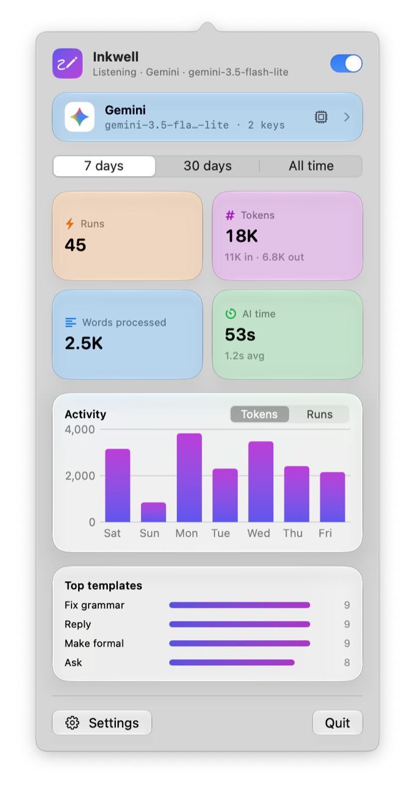
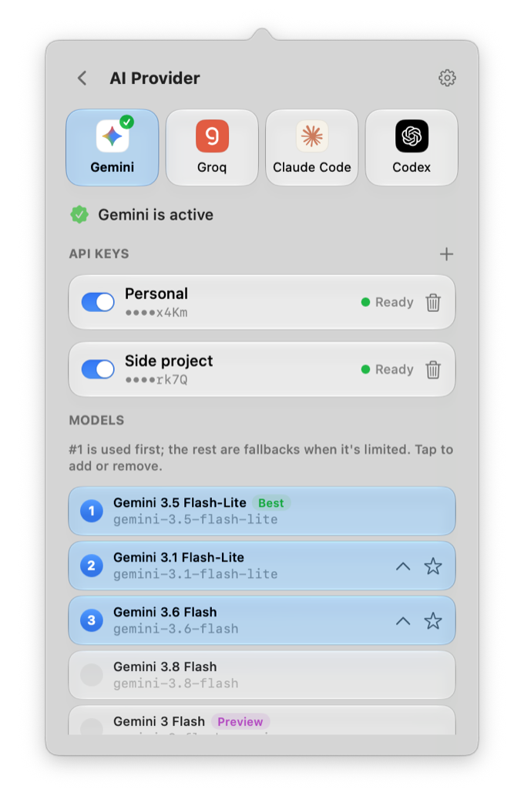
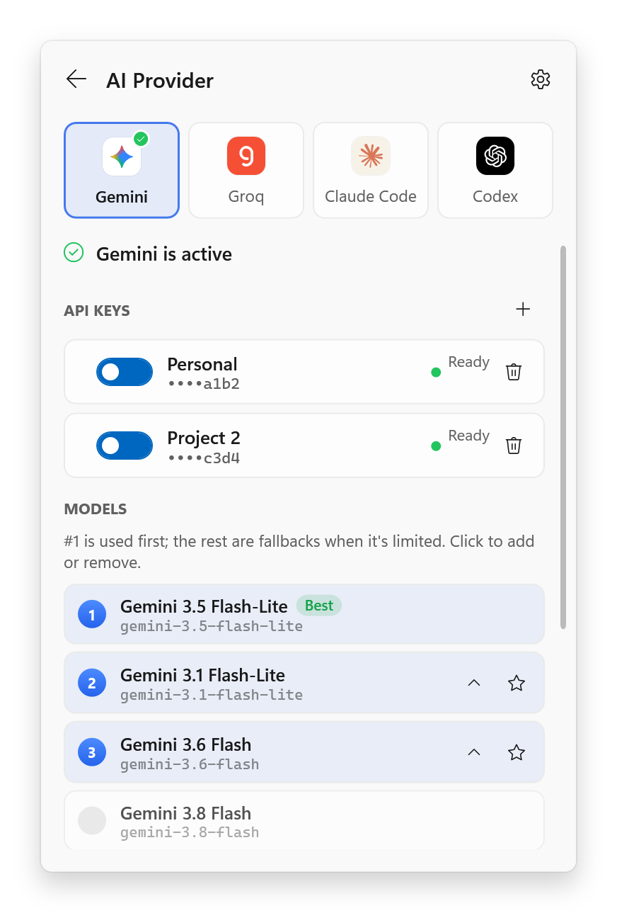

Fix your writing without leaving the text box.
Inkwell is a free, open-source app for Mac and Windows. Write in any app, end your text with a trigger like ?fix, and Inkwell replaces it with the corrected version, using the AI you already have.
The problem
Asking AI to fix one sentence takes ten steps.
You wrote something and want it a little better. Here's what that usually costs, and what it costs with Inkwell.
- Select what you wrote
- Copy it⌘CCtrl+C
- Switch to the browser⌘TabAlt+Tab
- Find the ChatGPT or Claude tab
- Type “fix the grammar in this:”
- Paste⌘VCtrl+V
- Wait, then skim the answer
- Copy the part you need
- Switch back⌘TabAlt+Tab
- Select your draft and paste over it
And by now you've forgotten the sentence you were going to write next.
Same result, in the same place. Press ⌘ZCtrl+Z if you want your original back.
How it works
Type. Add a trigger. Keep typing.
- 1
Write as usual
In Mail, Slack, Teams, WhatsApp, your browser or almost any other app. Inkwell stays out of the way.
- 2
End with a trigger
Type
?fix,?formal,?shortor one of your own. A small pill shows it's working. - 3
Get it back in place
About a second later your text is replaced. Undo works, and your clipboard is put back.
Triggers
Seven to start with. Write as many as you like.
A trigger is a short instruction you can edit in Settings. It either replaces your text or adds the result below it.
AI providers
No new subscription. It runs on what you already have.
Pick a provider in Inkwell and switch any time. Your text goes from your computer straight to that provider. Inkwell has no server of its own.
Get one from Google AI Studio in about a minute.
 GroqFree key
GroqFree keyVery fast. A good second option when Gemini is busy.
Signed in to the claude CLI? No key needed.
Uses your existing codex CLI sign-in.
Limits are handled for you. Add more than one key or backup models. When one hits a limit, Inkwell rests it until it resets and uses the next. For Claude Code and Codex it knows the 5-hour and weekly plan limits and tells you when they reset.
The app
Everything is one click away.
There's no window to keep open. Inkwell sits in your menu bar or notification area, and one click shows you everything.


See what it's done
Runs, words and tokens for the week, and which AI is answering right now.


Switch AI in a click
Pick a provider, add keys, and choose which models to try first and which to fall back on.
Privacy
It only listens for triggers.
Your text goes one place
Only to the provider you picked, and only when you type a trigger. No account, no server, no analytics.
Nothing is logged
Inkwell remembers just the last 64 characters you typed, to spot a trigger. Password fields are never read.
Keys stay on your computer
In the macOS Keychain, or encrypted with Windows DPAPI for your account.
It won't paste in the wrong place
Move to another field while it works, and the result goes to your clipboard instead.
Open source
Free, and every line is public.
Inkwell is MIT licensed. Swift and SwiftUI on the Mac, .NET and WPF on Windows, with no third-party dependencies. Read it, build it yourself, or help make it better.
Install
Up and running in two minutes.
macOS
macOS 14 or later · Apple silicon and IntelThe first time you open it, macOS asks you to confirm. Go to System Settings → Privacy & Security and click Open Anyway.
Windows
Windows 10 and 11 · no admin neededIf SmartScreen says “Windows protected your PC”, click More info → Run anyway. The installer isn't code-signed yet.
- Open Inkwell. A pen icon appears in the menu bar, or in the notification area on Windows.
- On a Mac, allow Accessibility when asked, so it can read and replace text. Windows needs nothing extra.
- Add a free key, or pick Claude Code or Codex if you use them.
- Type something and end it with
?fix.
FAQ
Questions
How is Inkwell different from Grammarly?
Grammarly checks as you type and runs on its own account and plans. Inkwell stays quiet until you type a trigger, then uses the model you choose: a free Gemini or Groq key, or Claude and ChatGPT through the plans you already have. Triggers are also yours to write, so it can do far more than grammar.
Why not use Apple's Writing Tools?
Writing Tools need Apple Intelligence, which needs an Apple silicon Mac, and you select text and open a menu each time. Inkwell runs on any Mac with macOS 14 or later, Intel included, and your hands never leave the keyboard.
Is it really free?
Yes. Inkwell itself is free and MIT licensed. Gemini and Groq offer free API keys, which are plenty for everyday writing. If you'd rather use Claude Code or Codex, Inkwell runs on the plan you already pay for, with no extra cost.
Where does my text go?
Only to the provider you picked, and only when you type a trigger. Inkwell has no server, no account and no analytics.
Does it work in every app?
Almost. It reads text through the system's accessibility API (Accessibility on macOS, UI Automation on Windows), and for apps that don't support that it falls back to select-all and copy. In long documents, use a trigger set to insert below, because replace mode replaces the whole field. On Windows, apps running as administrator need Inkwell to run as administrator too.
What happens when I hit a rate limit or my Claude plan's limit?
Inkwell rests that key or model until its limit resets and uses the next one. For Claude Code and Codex it recognises the 5-hour and weekly plan limits, tells you which one you hit and when it resets, and points you to a provider that's ready instead of retrying in vain.
Which keyboard layouts are supported?
The shortcuts Inkwell simulates on the Mac assume a QWERTY layout for now. On Windows it uses the standard Ctrl+A, Ctrl+C and Ctrl+V, which work on every layout.